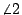

| |
平面上的一條射線表達了一個方向，而一條直線則是具有兩個相反的方向。再者兩條共起點的射線
 和 和
 在方向上的差別也就是 的角度所表達者，亦即角度乃是其方向差的度量是也。在平面幾何中，兩個射線同向平行的直觀內含是兩者所表達的方向相同。以下讓我們來分析一下，這種「方向相同」的概念究竟應該如何定義才算是合理。
在方向上的差別也就是 的角度所表達者，亦即角度乃是其方向差的度量是也。在平面幾何中，兩個射線同向平行的直觀內含是兩者所表達的方向相同。以下讓我們來分析一下，這種「方向相同」的概念究竟應該如何定義才算是合理。
【分析】：
- 若
,
共在一條直線上，則易見兩者同向的充要條件是
[在兩者反向時
的可能性是 ，單點或一個有限長線段。]
- 在
,
不共線的情形，連結
。如 [圖0-7] 所示，
和
共線同向，而 和 
則分別度量著
和
,
和
的方向差。由此可見，
 應該是檢驗
和
是否方向相等的合理條件，因為「等向」減「等向」應該還是相等者，是不？ 應該是檢驗
和
是否方向相等的合理條件，因為「等向」減「等向」應該還是相等者，是不？
[ 圖0-7 ]
- 假如我們採取上述「合理」的條件來定義
,
是否「等向」，即
表示
,
「等向」。令
是和
共線同向者，則由
「等向」和
「等向」
當然也應該有
和
「等向」。因此如 [圖0-7] 所示的 應該等于 。再者，由 [圖0-7] 所示
所以
上面三點分析說明了平面上的「等向」概念是否能夠合理地定義而又不產生矛盾，那就要看三角形的內角和是否恆等于一個平角 。換句話說，平面的平行性和三角形的內角和恆等于 π 其實是同一件事的兩種表現。
[註]：在古希臘的歐幾里得的《Elements》中，以下述平行公理來描述平行性，即設平面上兩條直線  , ,  和第三條直線 和第三條直線  相交： 相交：
[ 圖0-8 ]
若同傍內角
, 之和小于 π，則 ,
必定相交于 的 , 所在的那一側。
平行性在平面幾何中所扮演的角色是它使得定量幾何中的各種公式都大大的簡化。例如三角形的面積公式是「底 × 高  2」，直角三角形的三邊滿足勾方加股方等于弦方，以及相似三角形定理等等都是必須依賴于平行性的！ 2」，直角三角形的三邊滿足勾方加股方等于弦方，以及相似三角形定理等等都是必須依賴于平行性的！
[註]：空間的連續性在直觀上業已由一條直線乃是連續不斷的，但是它又是「一剪即斷」，亦即一條直線 略去其中任給一點 P 後，即已分割成兩斷。但是上述連續性的深入理解和深遠影響則有待往後在適當的地方再詳加研討。
|
|
|